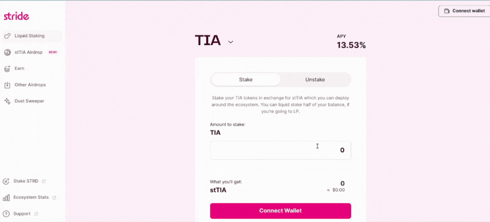

Using and Understanding Stride
If you’ve never used Stride before, you’re new to Cosmos, and you are not sure where to begin with Stride, do not worry. This is the guide you were searching for. You’ll learn everything you need to know about Stride and understand how it works. What I’ll do in this guide is to liquid stake some TIA step by step. If you follow this guide carefully, you’ll be able to:
- Stake your assets and earn passive income
- Having them unlocked and being able to use them anytime
- Understand exactly what you’re doing each time you’re using Stride
Short Introduction to Cosmos locking periods 🔒
Cosmos SDK chains are delegated PoS networks and the reason there is a locking period in every single one of them is to face "long-range attack" vulnerabilities. A long-range attack is like rewriting history—altering blockchain records from the past. In networks like Celestia or the Cosmos Hub, the unbonding period adds a time delay to withdrawing staked tokens, deterring attackers from manipulating history. What Stride allows us to do is to actually have our funds unlocked while we're not putting our networks at risk. What Stride does, like any other Liquid Staking Service, is very simple. In reality, we lock our funds, but in return, we receive a "receipt" that we indeed have staked funds. This receipt has the same buying power as our locked funds.
The journey to liquid staking
Step 1 - Bridging tokens to Stride
What we’re doing first is sending our tokens to the Stride Blockchain. If you’re coming from Ethereum or any other ecosystem then you’ll experience bridging greatness for the very first time. Bridging tokens from one Cosmos chain to another costs some cents and takes only some seconds, while it’s -by far- the most secure bridging solution to date. First of all, we need to go here and choose the token we want to liquid stake. In my case, I will choose TIA. Now proceed and set the amount of your available tokens that you want to liquid stake. Sign the transactions as the gif below.

Step 2 - Allow Stride to stake your assets
Stride will stake your tokens just as you would if you wanted to stake in the conventional way. In the second step, Stride simply asks for your approval to manage your funds. Afterwards, it will stake your tokens with selected validators that meet certain criteria (such as not being CEX validators and having a 5% commission). In most cases, the community decides on these selected validators through on-chain governance.
Step 3 - There is not step 3. You’re done!
And just like that, you bridged your assets from Chain A to Stride, granted Stride permission to stake your tokens, and Stride bridged these tokens back to Chain A to stake them for you... all in less than 2 minutes! Now, if you check your wallet or the Stride web app, you will see that you now hold stXXX (depending on what you staked). In my case, I see this: